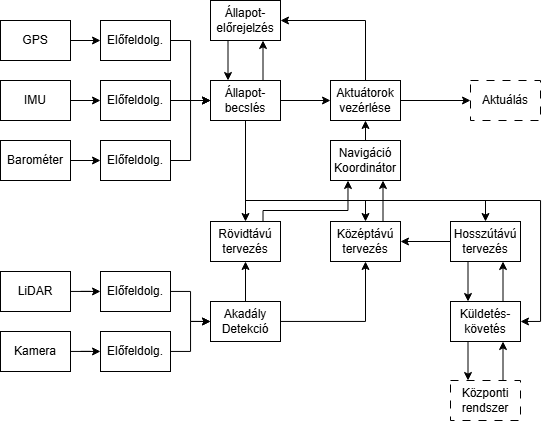

Laboratory Exercise 3
Várható idő metrikák
Adott egy komponens λ=0.0001 1/h hibarátával és μ=1/48 1/h javítási rátával. Számolja a ki a komponens MTTF, MTTR, MTBF metrikáit és aszimptotikus rendelkezésre állását!
Hibatűrés architekturális mintáinak vizsgálata
Cégünk autonóm drónokat tervez városi csomagszállítási céllal. Minden drónnak képesnek kell lennie a követekezőkre: - A fedélzeti érzékelők és tervezőprogram segítségével el kell jutnia a szállítási célállomásokra. - A drónokat koordináló központi rendszertől kell tudnia küldetéseket fogadni, és az útvonaltervet egyeztetni. - A küldetés előrehaladtát rendszeresen jelentenie kell a központi rendszer felé.
Korábban már elkészült a drón mozgás funkciójáért felelős részrendszer architektúrája. A funkcionális architektúrát hibadetektálási és hibatűrési mechanizmusok nélkül az alábbi sematikus ábra mutatja:

{kind=link}
A drón a helyzetének meghatározásához egy IMU-t, egy barométert és egy GPS-t használ. Mindegyik szenzor kimenete átesik egy előfeldolgozási lépésen, amelynek célja zajszűrés, a kalibráció figyelembevétele, és megfelelő mértékegységre konvertálás. Ezek mellett működik egy állapotelőrejelző komponens, amely a legutóbbi becsült állapot és az aktuátoroknak adott vezérlőjelek alapján előrejelzi a következő állapotot a drón mechanikájának matematikai modelljét felhasználva. A legutóbbi ciklusban előrejelzett állapot és az előfeldolgozott mérési adatok egy Kalman-szűrőn alapuló állapotbecslő komponensbe jutnak, amelynek eredményét – azaz a becsült jelenlegi állapotot (fizikai pozíció) – több komponens felé is továbbítjuk. Megkapja a már említett állapotelőrejelző komponens, az aktuátorok vezérléséért felelős komponens, és a tervezésért felelős komponensek. A drón által bejárandó trajektóriát három szinten tervezzük: - Egy hosszútávú tervező komponens az új küldetés megkapásakor meghatároz egy útvonalat a célig, amelyet egyeztet a központi rendszerrel (ahol megtörténik az útvonal légi biztonsági validációja is). Ezen komponens követi az útvonaltervvel való haladást, és adott időnként jelzi azt a küldetéskövetésért felelő komponensnek, amely kommunikál a központi rendszerrel. - Egy középtávú tervező komponens a lokális trajektória megtervezéséért felelős, amely az előre felismert akadályok körüli manővereket tervezi meg, és finomítja a magasszintű útvonal jelenleg releváns szakaszát egy megvalósítható trajektóriára. - Egy rövidtávú tervező komponens felelős a hirtelen elénk kerülő akadályok elkerüléséért, a megtervezett középtávú trajektóriát felülírva vészhelyzeti manőverekkel.
A közép- és rövidtávú tervező komponensek egy navigáció koordinátor komponensnek küldik a jelenleg szerintük elérendő pozíciót. A navigáció koordinátor elsődlegesen egy arbitrátor feladatot lát el: amennyiben a rövidtávú tervező szerint szükség van hirtelen elkerülő manőverre, akkor azt a jelet küldi tovább, amennyiben nincs, akkor a középtávú tervezőét. Az aktuátoroknak küldendő vezérlőjel számításáért felelős komponens a koordinátor kimenetét kapja meg, így annak egyetlen jelet kell csak kezelnie ahelyett, hogy mindkét tervezővel való kommunikációért is felelős lenne. Annak érdekében, hogy a vészhelyzeti manővereket a szabályzó algoritmus más módon kezelhesse (pl. kevésbé stabil vagy hosszú távon nem fenntartható aktuálást igénylő, de a hirtelen manővereket időben elvégezni képes szabályzásra váltás), a koordinátor a referenciajel mellé egy flag-et is csatol, mely mutatja, hogy nominális vagy vészhelyzeti mód szükséges. Mind a rövid, mind a középtávú tervezőnek szüksége van információra a közelben található akadályokról. Ezeket egy LiDAR és egy kamera segítségével detektáljuk, melyek jelei szintén átmennek egy előfeldolgozáson. Mivel a rövidtávú tervezésnek rövid idő alatt értesülnie kell a hirtelen előkerülő akadályokról, ezen funkció időkritikus.
Cégünk rendszertervező csapatának hibatűrésért felelős tagjai elkészítettek egy előzetes tervet a hibadetekciós és hibatűrési mechanizmusokról – alább látható az architektúra ezekkel bővített sematikus ábrája.
{kind=link}
A terv szerint az IMU és a Barométer előfeldolgozásához különböző numerikus ellenőrzéseket csatolunk a mért értékekről, GPS vevőből pedig kettő szerelünk be a drónba, és az értéküket összehasonlítva értesülhetünk róla, ha valamelyik elromlott. Bár nem ideális, de egy ideig (pl. biztonságos hely megtalálásáig) az egyik mozgásszenzor kiesése mellett is tud a drón navigálni. Ehhez hasonlóan az akadályokat detektáló szenzorokhoz is csatolunk ellenőrzést, de itt a jelek bonyolultsága (kép és pontfelhő) miatt csak alapvető rendelkezésre állási ellenőrzést végzünk, pl. nem teljesen fekete-e a kép. Ez alapján az akadály detektor komponens ideiglenesen „limping” módba tud kapcsolni, ahol csak az egyik szenzorra támaszkodik, amíg a drón talál egy biztonságos helyet a leszálláshoz.
Az állapotbecslő komponens az állapotbecslés elvégzését követően ellenőrzi az állapot fizikai hihetőségét (figyelembe véve a korábbi állapotot), emellett akkor is hibát jelez, ha egy előre meghatározott értéknél nagyobb az eltérés az előrejelzett és a mért állapot között.
Az aktuátoroknak küldött vezérlőjelet egy különálló komponens monitorozza, és azokon ellenőrzést végez, például nominális módban elvárjuk, hogy ne kezdjen instabil, hirtelen mozgásokba a drón, vagy ellenőrizzük, hogy ne terheljük túl a motorokat hosszú távon. A vezérlőjelet számító szabályzó algoritmust egy dedikált ECU-ban 3 független CPU számolja párhuzamosan, és az általuk számított jeleket egy „szavazó” komponens hasonlítja össze. Mivel a futtatott algoritmus azonos, és azonos bemeneteket használnak, ezért helyes működés esetén mindegyik ugyanazt a numerikus eredményt adja, így a szavazásnál nem számolunk tolerálható eltéréssel.
A rövidtávú tervezésnél 3 különböző algoritmikus alapelven működő implementációt készítünk, és az eredményükön szavazást végzünk a kitérő manőver szükségességéről és irányáról.
A középtávú tervezéshez bevezetünk explicit ellenőrzéseket a megtervezett trajektória megvalósíthatóságáról és az ütközésmentességről. Több implementációt is készítünk a középtávú manőverek megtervezéséhez: gyors heurisztikus módszerekkel indítunk, de ezek nem biztos, hogy találnak megfelelő trajektóriát, amely esetben váltunk a költségesebb módszerekre.
A hosszú távú tervezés adatvesztés vagy a tervezett úttól nagy mértékű eltérés (pl. sok elkerülőmanőver miatt) esetén újratervez, a korábbi útvonalhoz visszatérés helyett a jelenlegi pozícióból tervez egy új, a központi rendszerrel egyeztetett utat.
A mozgás megtervezéséhez kapcsolódó részfunkciók kódja (kék pöttyel jelölve) a repülés irányító ECU-n fut. Mivel ezen funkciók működése vészhelyzeti leszálláshoz is elengedhetetlen, ezen ECU-ból egy tartalékot is beépítünk. Mindkét példányon a gyártó által beépített HW ellenőrzések futnak induláskor és az alacsonyabb költségűek működés közben folyamatosan, emellett operációs rendszer szintű általános ellenőrzéseket is futtatunk – amennyiben ezen ellenőrzések hibát jeleznek, az ECU kikapcsol. A működő ECU-k folyamatosan életjelet küldenek egy heartbeat monitornak. A monitor jelzi egy tartalékra átállásért felelős komponensnek, ha az elsődleges ECU leállt. A rendszer tartalmaz egy helyreállítási adatbázist, melybe az elsődleges ECU rendszeresen menti az állapotát, így az átállás esetén átmozgatható a másodlagosba.
A hosszútávú tervezés és a küldetéskövetés egy magasszintű feladatokért felelős ECU-n fut, a GPU-t igénylő akadálydetekció pedig a vizuális feladatokért felelő ECU-n. Ezek is rendszeresen mentik az állapotukat, és adatvesztés esetén visszaállnak, amennyiben nem túl régi a legutóbbi mentés. Amennyiben már helytelen működést veszélye állna fenn a viszaállítással, a magasszintű ECU ehelyett újra egyezteti a küldetést a központi rendszerrel és újratervezi az útvonalat, a vizuális ECU pedig újrainicializál, elfelejtve az eddig felismert akadályokat.
Egy interakció logger komponens a drón buszhálózatán hallgatózik, és logol minden üzenetet a többi komponens között.
- Hol alkalmazták az architektúra tervezői az egycsatornás architektúra beépített önellenőrzéssel mintát? Milyen alkalmazás-független önellenőrzéseket használunk? Milyen alkalmazás-specifikus önellenőrzéseket használunk?
- Hol alkalmazták a kétcsatornás architektúra összehasonlítással mintát? Az alkalmazási példák közül melyikben szerepel diverzitás, és melyik egyszerű duplikáció?
- Hol alkalmazták a kétcsatornás architektúra biztonsági ellenőrzéssel mintát?
- Hasonlítsuk össze az előzőekben említett 3 minta előnyeit és hátrányait! Az egyes példák esetében használható lett-e volna egy másik minta a választott helyett? Ha igen, hogyan, és milyen előnyei/hátrányai lettek volna ennek a konkrét esetben? Tudnánk-e az egyes példák esetében akár kombinálni a mintákat?
- Hol találunk példát ebben a tervben a hardware-hibák elleni hibatűrésre többszörözéssel? Mely esetekben látunk duplikálást diagnosztikával, és hol látunk tripla-moduláris redundanciát?
- Amennyiben SIL 2-es mikrokontrollereket használunk egy 10-8 1/h hibarátájú szavazókomponenssel, mekkora a valószínűsége, hogy az aktuátorvezérlésért felelős részrendszer 10 év alatt működésképtelen lesz vagy helytelen vezérlőjelet ad (csak a hardware-t figyelembe véve, hibátlan szoftvert feltételezve)? Hogyan lehetne ezt tovább csökkenteni csak ugyanilyen hibarátájú alkatrészeket felhasználva?
- Hol találunk példát tranziens hibák elleni hibatűrésre helyreállítással? Hogyan és milyen késleltetéssel tudjuk detektálni az adott hibát? Hogyan kezeljük a hibaterjedést? A helyreállítás melyik típusát (előre, vissza, kompenzáció) alkalmazzuk mely esetekben? Alkalmazható lenne másik típus?
- Hol találunk példát szoftver hibák tűrésére? Melyik esetben használunk n-verziós programozást, és melyik esetben helyreállítási blokkokat? Alkalmas lenne-e az adott célra a másik minta is?
Opcionális feladatok:
- A rendszertervező csapat egy tagja felvetette, hogy mivel úgyis van már a rendszerben egy kamera és egy LiDAR, ezeket is be lehetne csatornázni a mozgás érzékelésébe (vizuális odometria, optical flow). Milyen előnyei és hátrányai lennének ennek?
- Mi történne, ha a vezérlőjel kiszámításához a bemenetekben is független lenne a 3 csatorna? Mi változna, ha a 3 CPU-n különböző szabályzókat akarnánk futtatni diverzitási céllal?
- A korábban megadott adatokkal számolva mennyi a várható értéke annak az időnek, mire a 3. csatornából az egyik meghibásodik? Mekkora a várható értéke annak az időnek, mire 2 csatorna is hibás lesz?
- Milyen egyéb hibatűrési mechanizmusokat lenne indokolt bevezetni a már feltüntetetteken kívül?